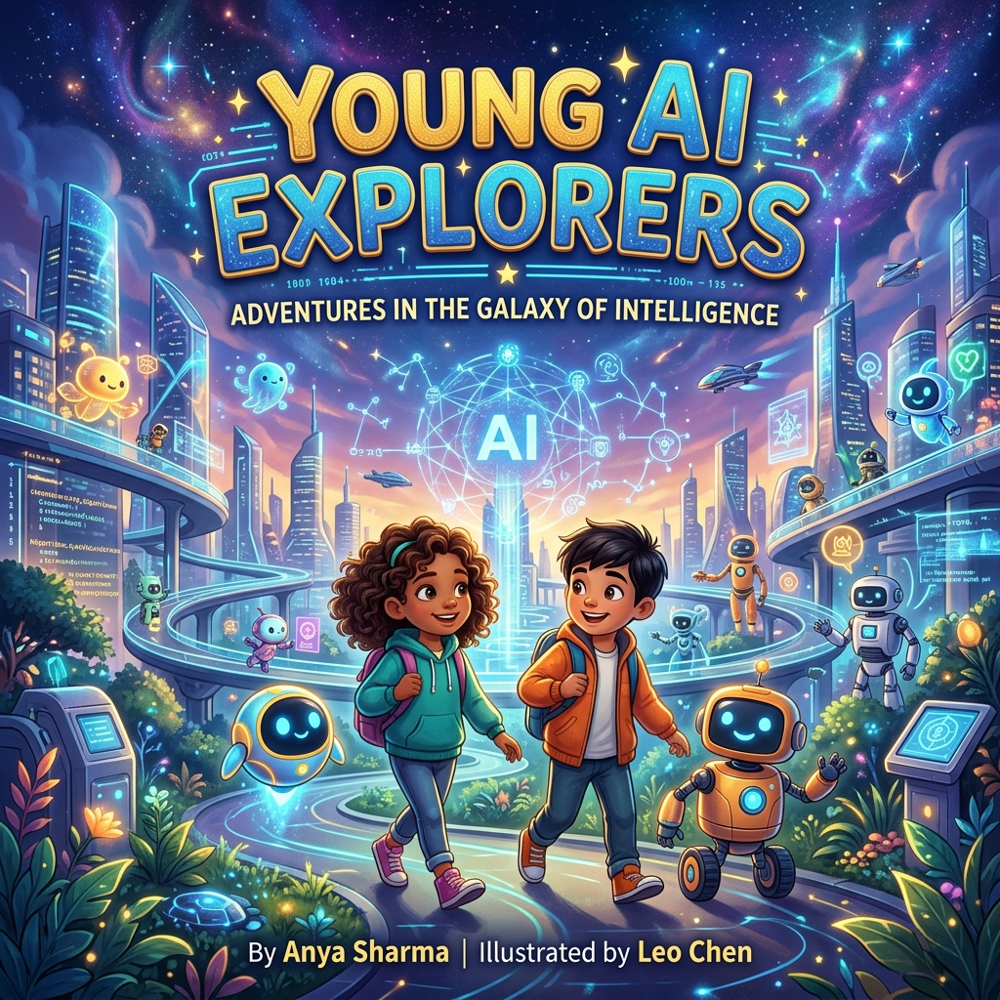
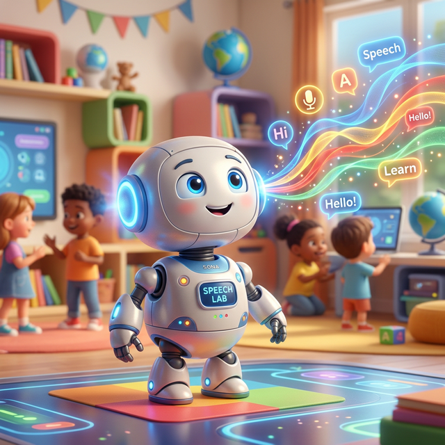
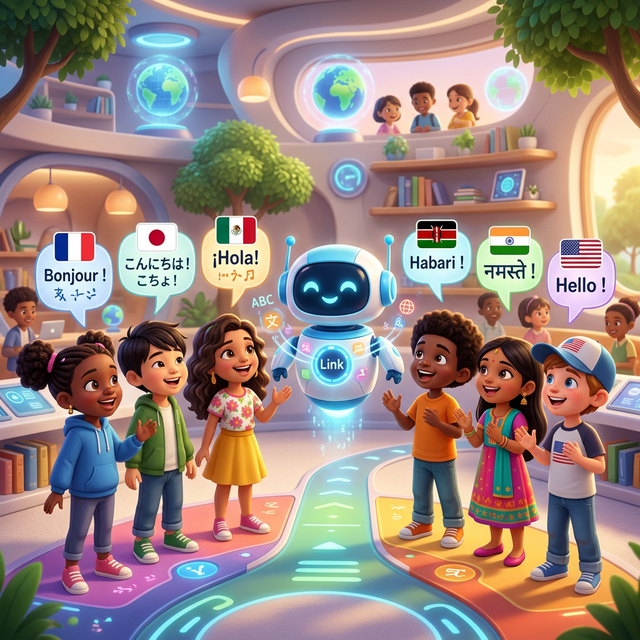
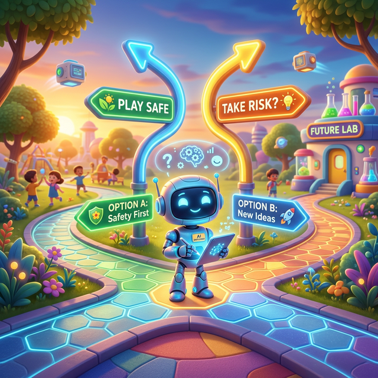
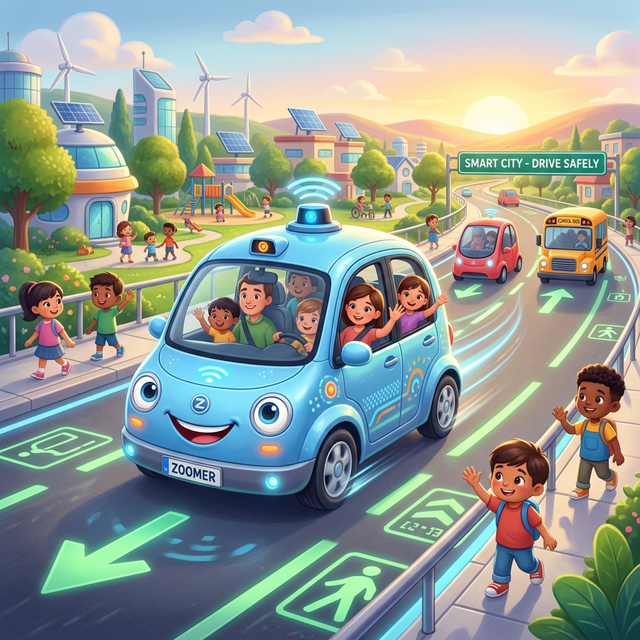
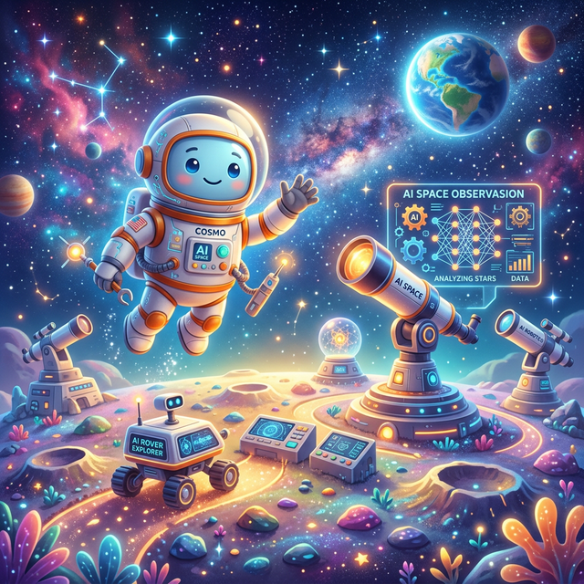
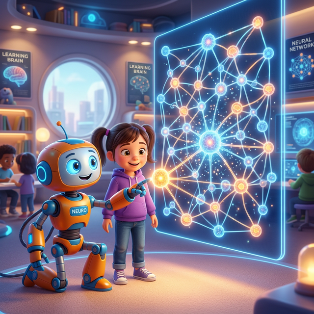
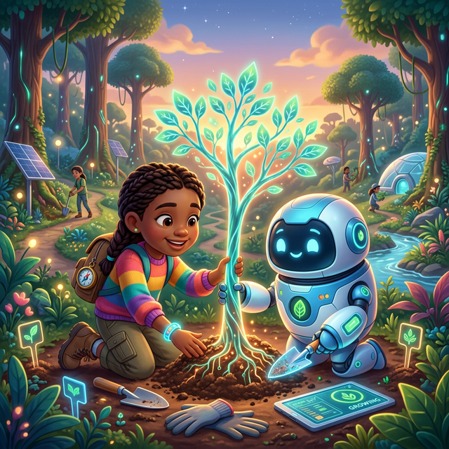
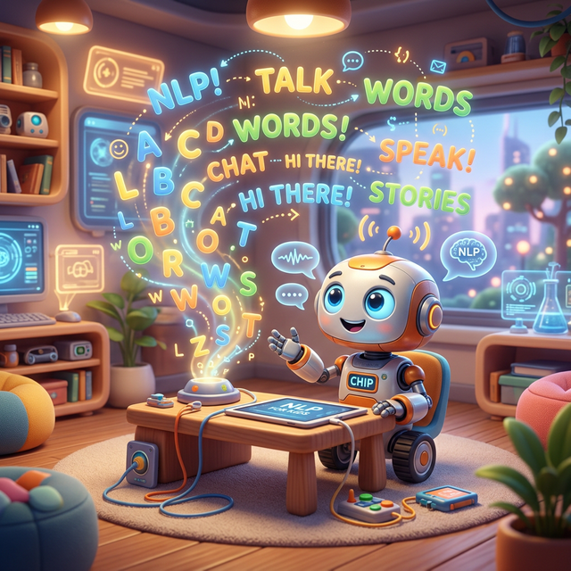

A Journey into the Future of Intelligence
Hello, Explorer! You are about to embark on a journey into the amazing world of Artificial Intelligence. Imagine having a friend who can learn anything, see patterns you might miss, and help us solve the world's biggest puzzles. That's AI!
Artificial Intelligence (AI) is when we teach computers to think, learn, and make decisions similar to how humans do. It's not magic—it's math, logic, and lots of data working together to make our lives better, safer, and more fun!
Are you ready to meet your robot guides? Turn the page!
"How does my tablet know it's me?" Maya wondered. Suddenly, Vision Vee appeared, surrounded by a magical holographic glow. "Hi Maya! Just like we see the beauty in the world, I use Computer Vision to see and understand the smart patterns around us!"
Computer Vision is a special gift for computers! It teaches them to see and understand the wonderful world, just like our eyes and hearts work together to recognize objects, people, and places.
Did you know that your smartphone camera takes about 1 billion calculations every second just to focus on your face? That's faster than you can blink!
What is Computer Vision?
A) Teaching computers to smell flowers B) Teaching computers to see and understand images C) Teaching computers to cook food
Alex loves talking to his smart instruments at home. Suddenly, Echo Ed, a robot with glowing soundwave patterns, appeared. "Hi Alex! Your voice is like a beautiful song! I help computers catch your words and turn them into smart ideas."
Speech Recognition helps computers listen with their hearts! It turns the sound of our voices into words that help the AI understand how it can help us best.
The first speech recognition system was created in 1952 and could only understand numbers, but today they can understand millions of words in hundreds of languages!
Which device commonly uses Speech Recognition?
A) Smart speakers B) Pencils C) Wooden blocks
Sofia wants to be friends with Yuki from Japan, but they speak different languages. Linky Lex appears, holding a glowing digital globe. "I'll help you build a bridge of friendship! I can turn your words into Japanese so Yuki can understand your heart."
AI Translation is like a magic bridge! It helps children from all over the world understand each other, turning different languages into the same message of friendship.
Google Translate processes more than 500 million translation requests every single day—that's like translating a whole library every minute!
What does AI Translation do?
A) Translates music into colors B) Translates words between different languages C) Translates numbers into letters
Tommy wonders how his game character knows where to go. Logic Leo, a robot with glowing gear eyes, appears. "Just like you think about your choices, I look at all the paths and pick the best one using rules. It's like a super-powered brain for puzzles!"
AI Decision Making is when computers learn to make smart choices by looking at different options and picking the best one based on rules and past experiences.
AI can make over a billion decisions in just one second! That's faster than you can decide which toy to play with!
What does AI use to make decisions?
A) Guessing and luck B) Data and logic C) Magic mirrorsHeal-o-Bot noticed a tiny problem in an X-ray that was hard for even expert doctors to see. "By being a smart partner for doctors," Heal-o-Bot says gently, "I help keep everyone healthy and happy!"
AI assists doctors in diagnosing illnesses and finding treatments faster and more accurately by looking at millions of medical images very fast.
Some AI can predict a heart problem days before it even happens, giving doctors a head start to help the patient!
How does AI help in hospitals?
A) By finding health problems in medical scans B) By eating the hospital food C) By hiding the doctor's stethoscopeGame Gus lives inside your favorite games as a smart opponent or a helpful teammate. "If I'm too easy, you'll get bored," Gus says with a playful wink, "I find the perfect balance so we always have a great time!"
AI creates challenging opponents and realistic characters in video games. It learns how you play and adapts to keep the game exciting and fun for everyone.
AI can now beat the world's best players at complex games like Chess and Go, and even help designers create whole new worlds in seconds!
What is the main role of AI in video games?
A) To make the loading screen longer B) To create smart opponents and realistic characters C) To change the color of the controller
Drive Dash is a futuristic car with special "eyes" called LIDAR. "I can see in every direction at once," Dash says with a hum, "and I never get distracted or tired! I keep everyone on the road safe."
AI enables cars to navigate safely by understanding traffic signs, other vehicles, and pedestrians. This helps reduce accidents and makes traveling easier.
Self-driving cars can react much faster than any human driver can, and they can "see" through fog and rain using special sensors!
What helps self-driving cars "see" the world?
A) Magic mirrors B) Cameras and sensors like LIDAR C) A big flashlight on the roof
High above our world, Astro Ace appears in a suit of stardust. "I use AI to navigate across distant planets, helping rovers find water and special rocks. I'm like a super-navigator for the universe!"
AI helps us explore the unknown by guiding space rovers and satellites. It makes quick decisions to land spaceships safely on other planets.
The Mars Perseverance Rover can plan its own path around dangerous rocks without waiting for humans to tell it what to do!
How does AI help on Mars?
A) By cooking food for aliens B) By guiding rovers safely across the planet C) By painting the rocks red
"How does a robot think?" Maya wondered. Layer Leo appeared, surrounded by glowing lines. "Think of me like a team of friends! Each layer learns a small part of a puzzle, and together we recognize anything!"
Neural Networks are like a brain for AI. They use many layers of "digital neurons" to learn patterns from information, just like your brain learns new things every day.
Digital neural networks were inspired by the way the billions of neurons in your own human brain work together to help you think and feel!
What are Neural Networks inspired by?
A) Spider webs B) The human brain C) Electric fences
Green Gaia, a robot with leaf-green patterns, appeared. "I use AI to listen to the Earth! I can detect when trees are in danger or track rare animals to keep them safe and healthy."
AI helps protect nature by analyzing weather and tracking wildlife. It gives us the tools we need to keep the world healthy and green for everyone.
Some AI systems can listen to the ocean and identify the "songs" of different whales from thousands of miles away!
How can AI help the environment?
A) By building more concrete roads B) By tracking rare animals and protecting them C) By making the clouds purpleData Dan loves patterns! "I don't need to be told exactly what to do," he says. "I look at thousands of examples and learn the rules myself, just like you learned to recognize different types of dogs!"
Machine Learning is when computers find patterns in data to make predictions or decisions without being specifically programmed for every single step.
Machine learning helps your favorite streaming apps guess which movie or song you'll want to hear next with amazing accuracy!
What does Machine Learning use to learn?
A) Magic dust B) Patterns in data C) Reading comic books
Wordy Wally is a master of words. "Human language is tricky!" he laughs. "I help computers understand not just the words, but the meaning and even the feelings behind them."
Natural Language Processing (NLP) is how AI understands, interprets, and generates human language, allowing us to talk to computers like they're our friends.
NLP systems are now so smart they can even understand jokes and sarcasm in different languages!
What does NLP help computers do?
A) Run faster B) Understand and use human language C) Paint pictures of fruit